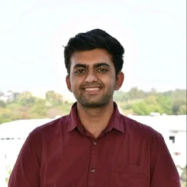
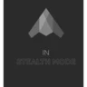

AdityaSannabhadti
I build and evaluate AI systems for clinical and financial data. Recently: a 4.2B clinical model that beat MedGemma-1.5-4B-it on all six benchmarks, an agentic retrieval prototype cut from ~8 seconds to 2, and an evaluation pipeline with zero run-to-run skew.
I build and evaluate AI for financial data: credit-bureau reporting cut from 3 days to 2 hours at Tata Capital, a fraud-identification model at 0.86 F1 at Jocata, and governed agent access to Oracle E-Business Suite at Value Global.
I build and evaluate AI for clinical settings: a 4.2B clinical model that beat MedGemma-1.5-4B-it on all six benchmarks, physician-rated RAG accuracy up 25% in EMMA, and a pricing agent that lifted CPT/HCPCS code selection from 82% to 91%.
Optimization is the craft: measure, fix, ship - models, code, pipelines, infrastructure.

Eight projects, each with the number it produced.
Pick a role track above and the evidence reorders itself. Open any card for the full case.
Med-Qwen-3.5-4B-Instruct
- Qwen3.5-4B-Base
- DoRA r=64
- ~276M tokens
- vLLM
EMMA AI Clinical Education Platform
- GCP
- Gemini
- pgvector
- physician surveys
Personal Learning Portal
- PyTorch
- Mistral-7B
- BART
- Deep Research Bench
NIST-AIMSEC evaluation records
- Gemma3-12B
- Gemma4-26B-A4B
- DeepSeek-R1
- temperature 0
Patient-facing pricing agent
- MedGemma
- SQL
- multi-hospital MRFs
Chemical safety retrieval, governed MCP
- Qdrant
- Neo4j
- AWS Bedrock
- MCP
Credit-bureau submission automation
- SAS
- Databricks PySpark
- automated tests
Fraud-identification NLP
- XGBoost
- SpaCy NER
- REST APIs
Results, drawn to scale.
Every bar is a number from the record, on one shared scale per chart.
Retrieval cut from ~8 s to 2 s
Reporting prep cut from 3 days to 2 hours
Code selection raised from 82% to 91%
A 4.2B clinical model against its base
Why the retrieval layer was the limit
Records from 15,944 papers, zero skew
Skills, counted rather than claimed.
Each cell is the number of resume bullets in that project or role that mention the area. Computed from the text, not self-rated.
- Qwen
- Google Cloud
- Gemini
- PyTorch
- PostgreSQL
- Neo4j
- Qdrant
- Databricks
- PySpark
- Oracle
- spaCy
- Claude
- Mistral
- DeepSeek
- AWS Bedrock
- vLLM
A darker cell means more bullets. Retrieval and evaluation run through most of the work; fine-tuning is concentrated in one project and the 4.2B model behind it.
August 2023 to now.
Roles, every bullet as written.
Value Global LLCJul 2026 - PresentAI Engineering Intern · Tomball, TX
- Cut retrieval time from ~8 seconds to 2 seconds by architecting an agentic proof of concept over ~1,000 chemical safety data sheets with Qdrant vector search, Neo4j relationship traversal, AWS Bedrock, and custom telemetry and evals.
- Delivered deterministic tool access to Oracle E-Business Suite (ERP) accounts payable, receivable, projects, and general ledger modules by building governed MCP agent orchestration, validated over 30-40 queries and 3-4 users.
- Achieved complete PII removal in 97 of 100 documents across transcripts, PDFs, and Excel files by routing preprocessing through a Bash-script skill call, with a statistical test at alpha = 0.05 on reporting accuracy.
Carnegie Mellon University, NIST-AIMSECApr 2025 - May 2026Research Assistant · Pittsburgh, PA
- Generated 17,167 schema-bound evaluation records from 15,944 full-text papers against a 28,023-paper inclusion list by pairing Gemma3-12B and Gemma4-26B-A4B extractors.
- Achieved zero run-to-run skew over 10 repeats of a 100-PMID sample, arbitrated by DeepSeek-R1 as judge and scored by a human verifier at temperature 0.
- Delivered the Perplexity and Claude experiments, evaluations, figures, and manuscript work for a medical knowledge imputation paper (arXiv:2503.22954) by proposing the Sorensen-Dice coefficient.
- Raised CPT/HCPCS code selection from 82% to 91% across 465 synthetic queries by architecting a patient-facing pricing agent with MedGemma intent extraction and deterministic SQL pricing over multi-hospital MRFs.

Stealth StartupJun 2025 - Sep 2025Co-Founder & AI Engineer
- Enabled declarative definition of hardware and deeptech test suites by designing the TOML and YAML file structures and prototyping the unit-testing layer of an agentic test and evaluation suite.
- Advanced to a first-round funding interview with UC Berkeley SkyDeck by co-founding the company and pitching the test and evaluation suite.
Tata Capital Pvt. Ltd.Feb 2024 - Jun 2024Business Analyst Intern · Mumbai, India
- Cut the team's 3-day credit-bureau submission prep to a 2-hour automated run by migrating legacy SAS reporting to Databricks PySpark with automated tests, generating the submission template used for customer scoring.
Jocata Financial AdvisoryAug 2023 - Nov 2023Data Scientist Intern · Hyderabad, India
- Automated fraud identification at 0.86 F1 by building and evaluating an end-to-end NLP pipeline (XGBoost, SpaCy NER) over text messages and costs, served through REST APIs.
Three papers.
- Can LLMs Support Medical Knowledge Imputation?arXiv:2503.22954 · 2025 ↗
- Multispectral & Thermal Data Acquisition System for Plant PhenotypingIEEE CONECCT 2022 ↗
- System Architecture and Software Design of a Handheld High Throughput Phenotyping Device: AgRECAIEEE APSCON 2023 ↗
Where I studied.
- Master of Information Systems ManagementCarnegie Mellon University · Pittsburgh, PA | Aug 2024 - Dec 2025
- B.Tech, Electronics and Computer EngineeringREVA University · Bengaluru, India | Oct 2020 - May 2024
And a few more.
- Best Software Engineer ProjectREVA University Capstone
1 of 70 ECE cohort projects
- Top 10 TeamsCMU Hack-a-Startup
Lawn-E, a weed-extraction and automated mowing robot
- OfficerCMU Recreational Badminton Club
60+ attendees per weekly session
- 11-785 Introduction to Deep LearningCNN face-verification training
Kaggle competition
- PosterAMIA 2025 KDDM Workshop